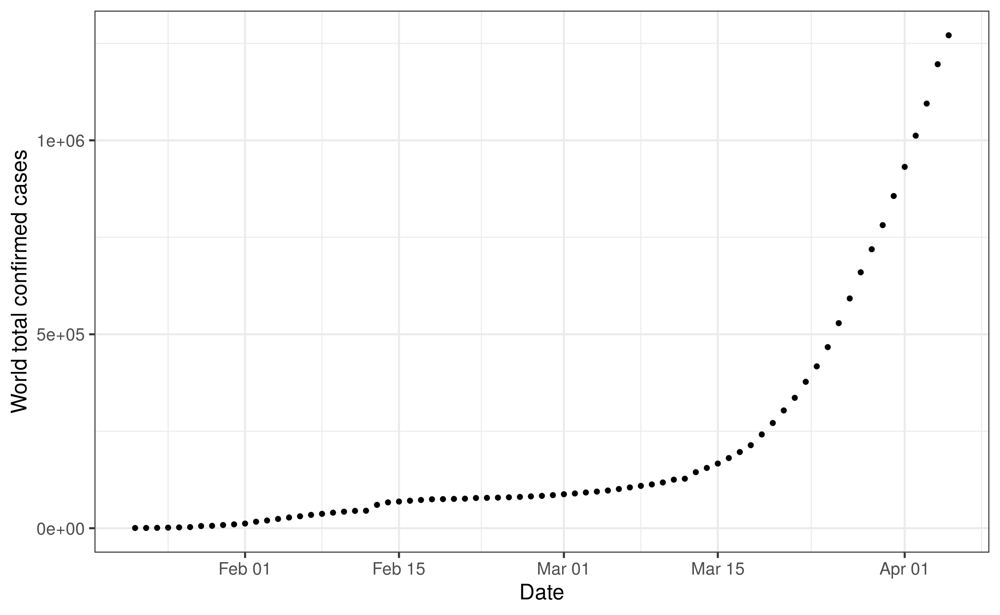
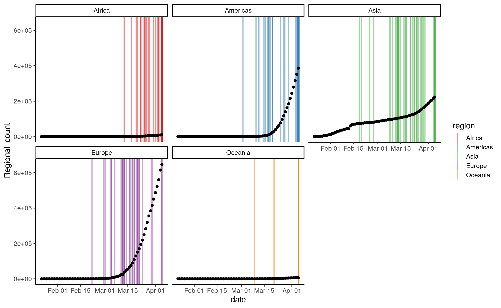

Rmarkdown tutorial
Santiago Caño-Muñiz
16/04/2020
1 R Mark..what?
In this tutorial we will learn the basic procedures to work with R Markdown. The RMarkdown framework is a scientific authoring framework and aims to embed the executable code in a proper document. For example, the super-cool website that we have prepared for this workshop has been fully built with RMarkdown (courtesy of Dr Weimann!).
In order to make the tutorial more engaging, we will base the tutoral on a practical case study: the analysis of the COVID19 epidemic that send us home in the first place. For that, let me open a new section with the # notation.
2 The COVID19 dataset
The human and economic toll of COVID-19 is a stark reminder of the fragility of our globalised society. The ability of a country to contain the outbreak across borders is being defined by their capacity to provide effective protection to the most vulnerable. However, the global pandemic has not impacted all the countries equally. To prove this, we will take a look into the COVID19_countries_data.csv table. Let’s then create our first “code chunk” with “```” and load the data and libraries that we have learned during the workshop.
# We open the code chuck with ``` followed with a {}. Within the curly bracketes with
# can specify few argumets. An easier way to add a new code segment could be to click
# on the icon "Insert" in the upper right corner of the code editor.
# For now, we will just write "r" as it denotes that the code we will use
# is written in the R language. Once we are inside the code chunk, the code follows again the R syntax.
# Load the libraries
library(data.table)
library(magrittr)
# Load the data
dtime <- fread("https://raw.githubusercontent.com/aweimann/floto-lab-learning-bioinformatics/master/datasets/COVID19_cases_and_policy.csv")
str(dtime)## Classes 'data.table' and 'data.frame': 15450 obs. of 41 variables:
## $ countryterritoryCode : chr "ABW" "ABW" "ABW" "ABW" ...
## $ date : chr "2020-01-22" "2020-01-23" "2020-01-24" "2020-01-25" ...
## $ Country : chr "Netherlands" "Netherlands" "Netherlands" "Netherlands" ...
## $ confirm : int 0 0 0 0 0 0 0 0 0 0 ...
## $ death : int 0 0 0 0 0 0 0 0 0 0 ...
## $ recov : int 0 0 0 0 0 0 0 0 0 0 ...
## $ Oxford_stringency_level : num 0 0 0 0 0 0 0 0 0 0 ...
## $ Additional health/documents requirements upon arrival: int 0 0 0 0 0 0 0 0 0 0 ...
## $ Amendments to funeral and burial regulations : int 0 0 0 0 0 0 0 0 0 0 ...
## $ Awareness campaigns : int 0 0 0 0 0 0 0 0 0 0 ...
## $ Border checks : int 0 0 0 0 0 0 0 0 0 0 ...
## $ Border closure : int 0 0 0 0 0 0 0 0 0 0 ...
## $ Changes in prison-related policies : int 0 0 0 0 0 0 0 0 0 0 ...
## $ Checkpoints within the country : int 0 0 0 0 0 0 0 0 0 0 ...
## $ Complete border closure : int 0 0 0 0 0 0 0 0 0 0 ...
## $ Curfews : int 0 0 0 0 0 0 0 0 0 0 ...
## $ Domestic travel restrictions : int 0 0 0 0 0 0 0 0 0 0 ...
## $ Economic measures : int 0 0 0 0 0 0 0 0 0 0 ...
## $ Full lockdown : int 0 0 0 0 0 0 0 0 0 0 ...
## $ General recommendations : int 0 0 0 0 0 0 0 0 0 0 ...
## $ Health screenings in airports and border crossings : int 0 0 0 0 0 0 0 0 0 0 ...
## $ Humanitarian exemptions : int 0 0 0 0 0 0 0 0 0 0 ...
## $ International flights suspension : int 0 0 0 0 0 0 0 0 0 0 ...
## $ Introduction of quarantine policies : int 0 0 0 0 0 0 0 0 0 0 ...
## $ Limit product imports/exports : int 0 0 0 0 0 0 0 0 0 0 ...
## $ Limit public gatherings : int 0 0 0 0 0 0 0 0 0 0 ...
## $ Lockdown of refugee/idp camps or other minorities : int 0 0 0 0 0 0 0 0 0 0 ...
## $ Mass population testing : int 0 0 0 0 0 0 0 0 0 0 ...
## $ Military deployment : int 0 0 0 0 0 0 0 0 0 0 ...
## $ Obligatory medical tests not related to COVID-19 : int 0 0 0 0 0 0 0 0 0 0 ...
## $ Partial lockdown : int 0 0 0 0 0 0 0 0 0 0 ...
## $ Psychological assistance and medical social work : int 0 0 0 0 0 0 0 0 0 0 ...
## $ Public services closure : int 0 0 0 0 0 0 0 0 0 0 ...
## $ Schools closure : int 0 0 0 0 0 0 0 0 0 0 ...
## $ State of emergency declared : int 0 0 0 0 0 0 0 0 0 0 ...
## $ Strengthening the public health system : int 0 0 0 0 0 0 0 0 0 0 ...
## $ Surveillance and monitoring : int 0 0 0 0 0 0 0 0 0 0 ...
## $ Testing policy : int 0 0 0 0 0 0 0 0 0 0 ...
## $ Visa restrictions : int 0 0 0 0 0 0 0 0 0 0 ...
## $ region : chr "Americas" "Americas" "Americas" "Americas" ...
## $ sub-region : chr "Latin America and the Caribbean" "Latin America and the Caribbean" "Latin America and the Caribbean" "Latin America and the Caribbean" ...
## - attr(*, ".internal.selfref")=<externalptr>We have just created our first piece of code. Note that we have not yet run it. If we would like to run an individual code chunk, we have to click on the little play buttom on the upper right corner of the cell. We will see all the output appear that we normally see when we run code in the console. In this case we see some messages from the libraries loaded and a preview of the data table. To suppress any internal R messages we could use message = False in side the curly braces (try it out). We can also include plots in the code chunk:.
# Between the brackets, we separate the arguments with ","
library(ggplot2)
dtime[, date := as.Date(date) # convert the date column into dates, which allow us quite
# cool operations when we work with time series
]
dtime[,
.(World_count = sum(confirm)), # Sum all the cases
by = date # by date
] %>%
# pass the cumulative casese to the ggplot command
# remember the . is a placeholder for the data frame above
ggplot(., aes(x = date,
y = World_count)) +
geom_point(size = 2) +
# Enhance output
labs(y = "World total confirmed cases", x = "Date") +
theme_bw(base_size = 20)
Now, let’s take a look at the data because as we said at the beginning. Remember what we said at the beginning: not all countries have been affected equally. We will try to figure out when the virus took root in each country. Let’s consider that an outbreak has started if or when the number of cases reached 100 cases. Here is the code we need:
dtime[confirm < 101, # We select the rows with less than 100 cases
.(outbreak_date = max(date),
confirm, region, date), # Assuming that the cummulative number of cases only increase,
# we select the latest date (or maximum)
by = Country] %>% # Repeat the operation for every country
.[date == outbreak_date] -> outbreak_date
dtime[,
.(Regional_count = sum(confirm)), # Sum all the cases
by = .(date, region) # by date AND region
] %>%
ggplot(., aes(x = date,
y = Regional_count)) +
# Call our second dataset
geom_vline(data = outbreak_date,
mapping = aes(xintercept = outbreak_date + rnorm(length(outbreak_date), sd = 0.2),
col = region), size = 1, alpha = 0.5) +
geom_point(size = 2) +
facet_wrap(region ~.) +
scale_color_brewer(palette = "Set1") +
theme_classic(base_size = 15)
We knew that the COVID19 started in China and the first cases were detected as early as December. Still, we can see the exponential nature of the spread, first in Asian countries outside of China and then in Europe. Another way to look at it could be count the number of countries that have an outbreak in each region according out our definition:
outbreak_date[,
.(count = .N), # .N key notation to get the number of elements within out particular sub-group
by = .(region, date)] %>%
ggplot(., aes(x = date, y = count, fill = region)) +
geom_bar(stat = "identity") +
facet_wrap(region ~.) +
scale_color_brewer(palette = "Set1") +
theme_classic(base_size = 15) At this point, we could propose few hypotheses to find out why the epidemy took this dynamic. Here, we will discuss three examples that also will help us to familiarise with the tools we have learned throught the course. Our hypothesis are (Notice how we use the “-” syntax to denote a list): - The number of cases per country is just an artifact, it just depends on the size of the population. - The number of cases depends on the number of tourists because they can carry the disease without symptoms, they act as vector between countries. Nevertheless, we don’t know whether the real relation happens via leaving or arriving tourist, a combination of both, or even the ratio of tourist to population. - The number of cases depends on the stringency of the preventive measures introduced. This might seem a rather qualitative answer, however, the University of Oxford has created the Oxford Stringency Index. In order to explore this questions and create our models, we will work with a second dataset build from the WorldBank open libraries and John Hopkins COVID19 monitor. We mark with “##” the opening of a sub-section. Indeed, the logic for headings is quite simple: “#” for level 1, “##” for level 2, “###” for level 3…
2.1 Modelling
First, we will load the data. There, we will notice that the structure has changed as now the number of cases has been fixed to a single day. For the new dataset, we normalised the date using as a reference the date 20 days after where the number of cases reached 100. That will helps us to compare the state of the epidemic across countries. So, now we can take a look at our base model, which is relating the number of cases to the size of the population of each country:
d <- fread("https://raw.githubusercontent.com/aweimann/floto-lab-learning-bioinformatics/master/datasets/COVID19_countries_data.csv")
d[, pop := fempop_2018 + male_pop_2018]
m0 <- lm(confirm ~ pop, data = d)
par(mfrow=c(2,2)) # Configure the plot output to 4 panels
plot(m0)
##
## Call:
## lm(formula = confirm ~ pop, data = d)
##
## Residuals:
## Min 1Q Median 3Q Max
## -20341.1 -2046.5 -1207.0 660.5 20380.9
##
## Coefficients:
## Estimate Std. Error t value Pr(>|t|)
## (Intercept) 2.482e+03 7.557e+02 3.284 0.00178 **
## pop 1.396e-05 2.842e-06 4.911 8.48e-06 ***
## ---
## Signif. codes: 0 '***' 0.001 '**' 0.01 '*' 0.05 '.' 0.1 ' ' 1
##
## Residual standard error: 5394 on 55 degrees of freedom
## (11 observations deleted due to missingness)
## Multiple R-squared: 0.3049, Adjusted R-squared: 0.2922
## F-statistic: 24.12 on 1 and 55 DF, p-value: 8.483e-06We can see that the number of cases is clearly dependent on the population. Checking the Standardized residual plot, we can see that in fact, most of the countries lie on the expected line, except for a few extreme outliers where our model underestimated the number of cases. In a way, that was something to be expected, as it only means that the more people living in a place the more potential cases we see. Let’s normalize our data to account for this basic observation. To do that, we have two main options: - We could divide the number of cases by the total population. - We could include the population as an effect along with the other factors in the model.
##
## Call:
## lm(formula = confirm ~ cases_perM, data = d)
##
## Residuals:
## Min 1Q Median 3Q Max
## -3627 -2760 -2012 -179 38570
##
## Coefficients:
## Estimate Std. Error t value Pr(>|t|)
## (Intercept) 3740.57132 949.80545 3.938 0.000233 ***
## cases_perM -0.01606 0.13420 -0.120 0.905169
## ---
## Signif. codes: 0 '***' 0.001 '**' 0.01 '*' 0.05 '.' 0.1 ' ' 1
##
## Residual standard error: 6469 on 55 degrees of freedom
## (11 observations deleted due to missingness)
## Multiple R-squared: 0.0002604, Adjusted R-squared: -0.01792
## F-statistic: 0.01432 on 1 and 55 DF, p-value: 0.9052After our transformation we won’t see an effect of the population on the number of cases anymore. Then, we can explore our transformed variable to explore the other two models that focus on more interesting variables.
d[, touris_perM := tourist_arrival_2018/pop]
m0 <- lm(cases_perM ~ 1, data = d) # This notations means that the cases only depends on the global average number of cases
m1 <- lm(cases_perM ~ Oxford_stringency_level, data = d)
m2 <- lm(cases_perM ~ tourist_arrival_2018, data = d)
m3 <- lm(cases_perM ~ tourist_departure_2018, data = d)
m4 <- lm(cases_perM ~ tourist_departure_2018*tourist_arrival_2018, data = d)
m5 <- lm(cases_perM ~ touris_perM, data = d)
AIC(m0, m1, m2, m3, m4, m5,
k = log(nrow(d))) # Increase size of the penaly## Warning in AIC.default(m0, m1, m2, m3, m4, m5, k = log(nrow(d))): models are not
## all fitted to the same number of observations## df AIC
## m0 2 1169.0216
## m1 3 1170.4417
## m2 3 1132.4179
## m3 3 956.1363
## m4 5 961.7240
## m5 3 1125.0671With this quick look, we can see that the number of cases is completel uncorrelated with the stringency of the country response, becasue this model has very similar AIC compared to the base model. This could perfectly be a result of the relevance of the epidemic in certain countries have motivated unaffected countries to take measures in advance, before the epidemy takes root. However, we could say that including the tourism in the model improves the explanatory power of our model. More precisely, it is the number of tourist departure that give us the best model within this set. Next, we should do proper quality checks to verify that our model assumptions are not broken:
 This check illustrate that our model is still short in power because it still have problems with outliers (rows 13, 36 and 43) and more importantly, we are predicting negative number of cases for two countries. We could continue improving the model, yet we consider it is the time for you to take on and give it a try. Therefore, we would like to propose you to create your own RMarkdown. You can create your model freely, but if you look for some inspiration, we want to suggest 3 potential topics to investigate:
This check illustrate that our model is still short in power because it still have problems with outliers (rows 13, 36 and 43) and more importantly, we are predicting negative number of cases for two countries. We could continue improving the model, yet we consider it is the time for you to take on and give it a try. Therefore, we would like to propose you to create your own RMarkdown. You can create your model freely, but if you look for some inspiration, we want to suggest 3 potential topics to investigate:
- How would you explain the mortality of the virus in different countries? Do you think the number of doctors or hospital beds matter or it is just a matter of GDP per capita? Maybe the mortality is associated to the fraction of smokers or diabetes?
- Once you finish your model, what do you think it means to add a regional intercept to your model? Do any of your parameters gets affected?
- For the most advanced students and entusiast, we propose you a little challenge. Could you find a code to:
- Calculate the relative increase per day of cases as: \(\mu =\frac{R_{t} -R_{t-1}}{R_{t-1}}\)
- Find the day in wich the curfew was enforced in the COVID19_cases_and_policy dataset. The colum curfew in the dataset indicates with a number 1 when a measure related to this topic has been taken and 0 for all the other days.
- Plot the average \(\mu\) per country after \(n\)-days and explore the impact of this measure.